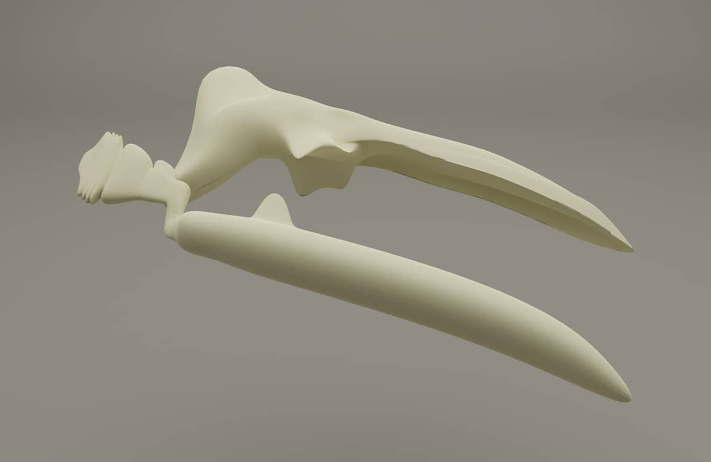
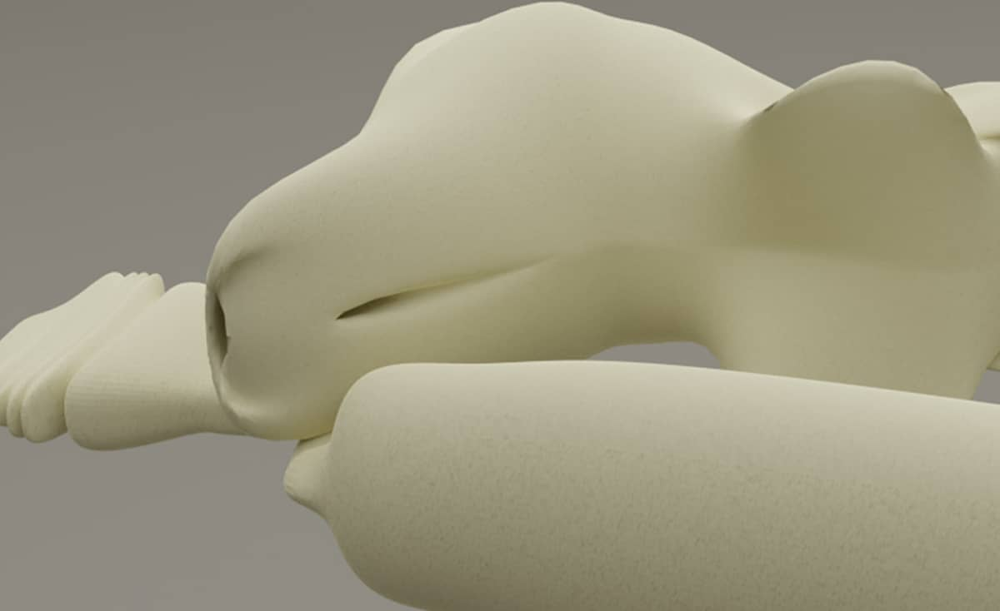
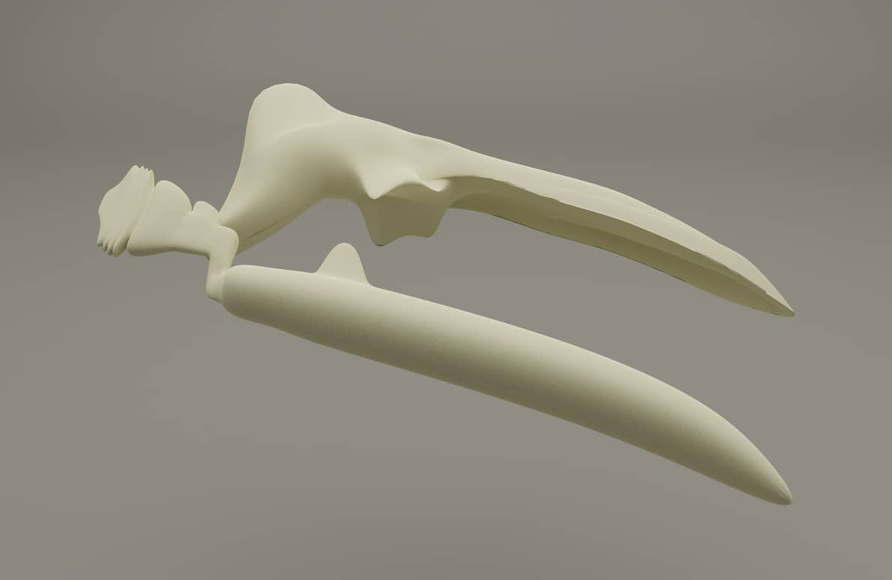
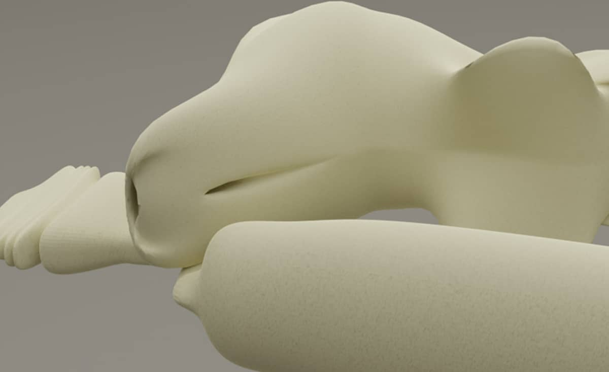
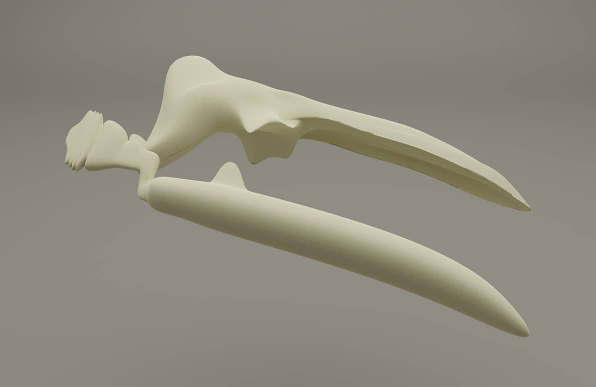
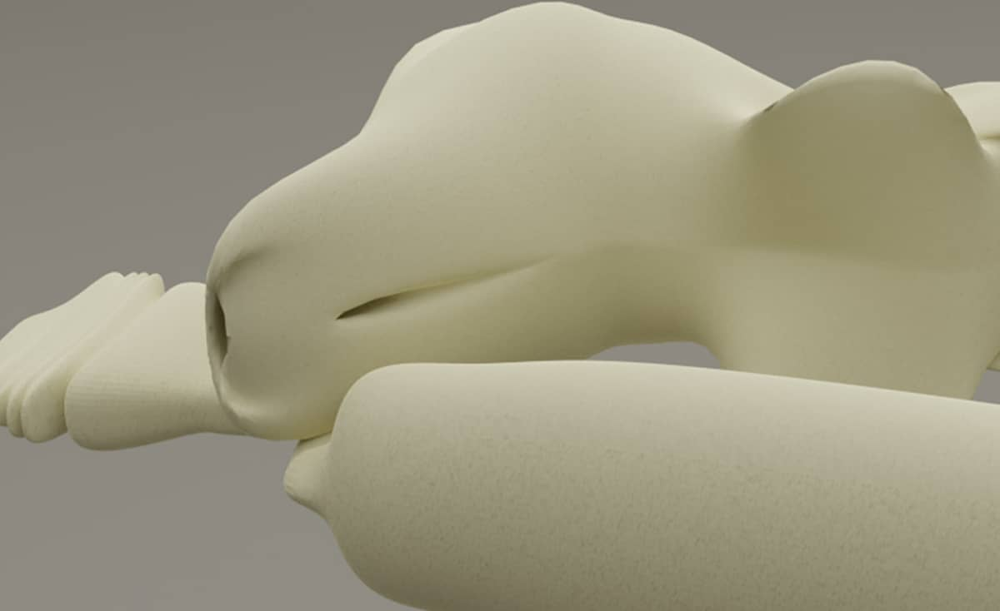

This low poly fossil site model was created for a virtual environment built in Spoke by Mozilla Hubs. Multiple users can join and explore the environment or use it as a virtual meeting room.
I modeled the assets in Blender, baked the textured, and then exported them to Spoke.

